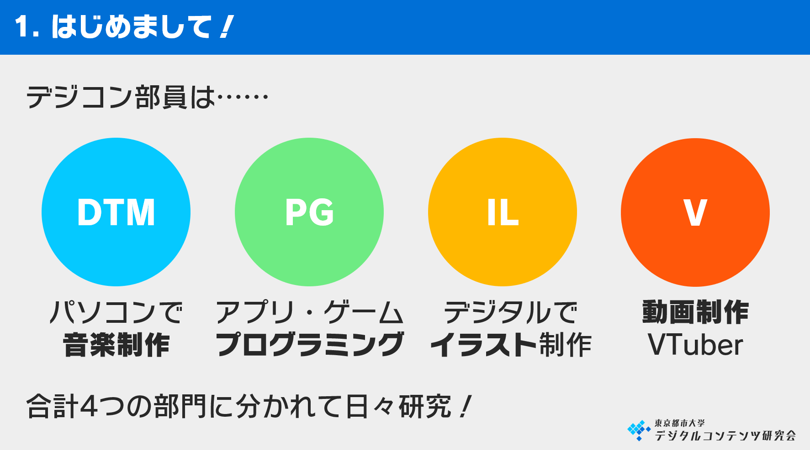

デジコンとは
新入生の皆さん、こんにちは！私たちは、東京都市大学 デジタルコンテンツ研究会（デジコン）です。
デジコンは、一言でいうと「創作活動をワイワイ楽しむ」サークルです。音楽制作（DTM）、プログラミング、デジタルイラスト、動画など、様々な創作物を作って、みんなで発表しあって、お互いに楽しむ、というのが活動内容です。
4つの部門（DTM・PG・IL・V）があり、それぞれに所属して活動を行います。複数所属するのもOKです。

デジコンに所属することで、様々な知識をもっている先輩や同級生と交流することができます。一人で作ることが難しいゲームなどを、誰かと一緒に作ることもできます。作品を発表するというモチベーションをもつことができます。
デジコンで一緒に、作品を作りませんか？
活動について
デジコンでは、
- 週に1～2回の活動（集まって作業）
- 「クリエイター講習会」……初心者向け講座の開催
- 年4回の「作品大発表会」
- 夏の合宿
- 横浜祭、世田谷際、M3、コミケ、技術書典等のイベント参加（今年度は新型コロナウイルスのため未定）
などの活動を行います。（本年度は新型コロナウイルスの影響で、内容が変更される可能性があります）
オンラインでの活動について
本年度は、当面の間すべての活動をオンラインで行います。活動は「Discord」というチャットツールで行います。
週に1回～2回、夜にDiscordのVC（ボイスチャット）に集まり、それぞれ作業をしたり、講座を開いたりします。スケジュールに関しては、みなさんが一番合う時間に行いたいと考えています。
初回は6/12(金) 21:00から1時間程度行う予定です。
会費について
年1,000円頂きます。ただし、本年度は対面での回収ができないので、また決定次第ご連絡します。
サークル参加方法
参加を希望する方は、こちらの入会ページのフォームに情報を記入し、送信して下さい。